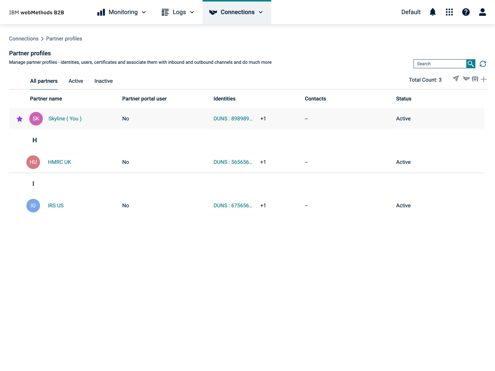
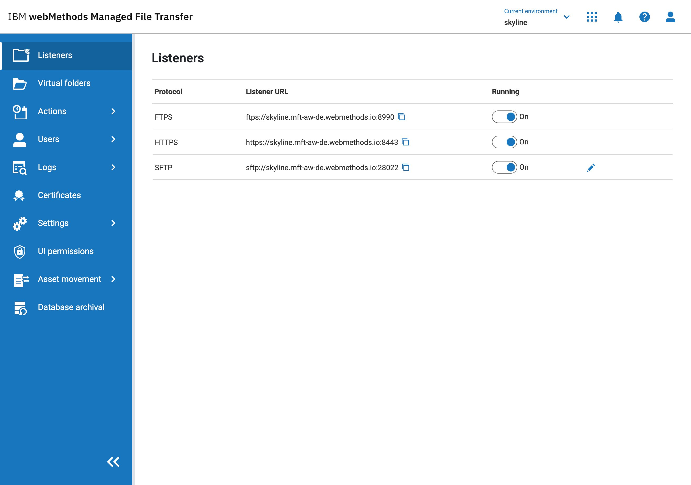
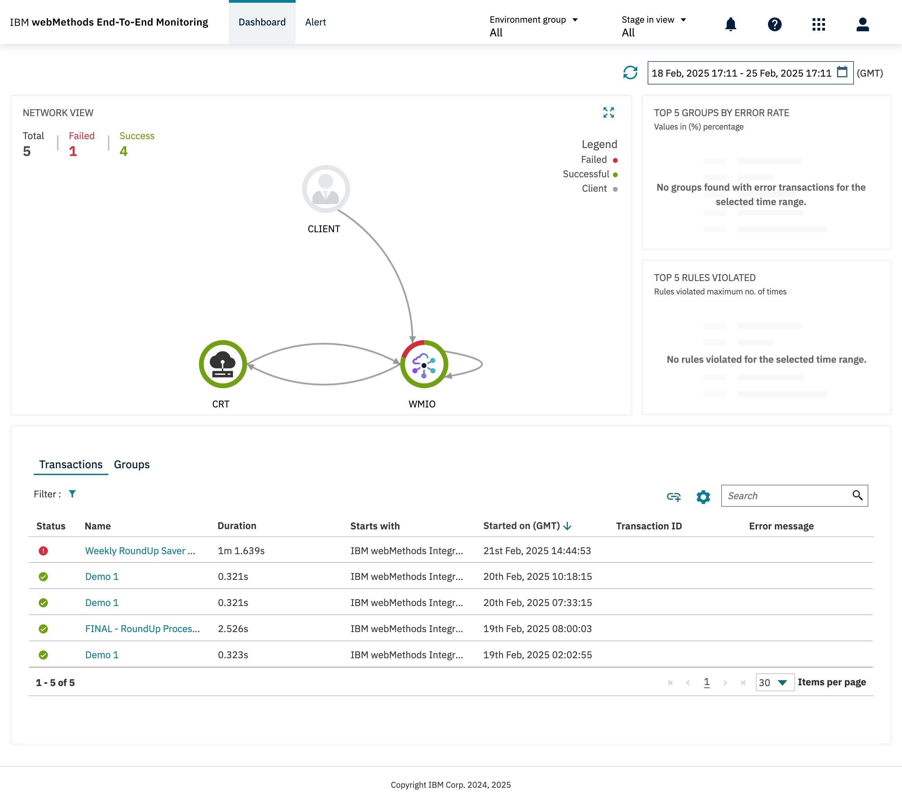

System adoption at scale — with teams who didn't choose it.
Three IBM products. Eight acquired products. One platform. I led the Carbon migration strategy, bringing together different design systems, engineering cultures, 20+ engineers, and an acquired design team around a shared foundation.
A design system is only as good as its adoption. This is the story of driving adoption across fragmented products and engineering cultures without authority — and what it taught me about earning trust before enforcing governance.
The story
The challenge
IBM's acquisition of webMethods.io brought eight products into a single platform alongside three existing IBM products — but every product looked different, built against vastly different versions of their own design system. Most teams had no design tokens, most were on Angular, and none had chosen Carbon.
The challenge wasn't just visual — it was cultural. I was the lead designer on the migration, responsible for defining the strategy from scratch. It had to work across competing roadmaps, legacy technology, and teams at very different levels of maturity, all within nine months. The job wasn't just to define the right approach. It was to define one that teams would actually adopt.




The strategy
Component-level migration was considered, but the scale and timeline made it unrealistic. Instead, I focused on the foundations — colour, typography, iconography, and navigation — changes that delivered the biggest visual impact with the lowest implementation cost. We pivoted from design tokens to hex values when the timeline wouldn't support the former.
The strategy wasn't rigid. One developer portal relied on user customisation, so Carbon navigation would have hurt the experience. The goal wasn't perfect uniformity — it was creating a migration strategy teams could commit to.


The craft
Colour mapping matrices weren't enough — teams needed something more concrete. I created product-specific reference screens showing Carbon applied to real UI, giving teams a clear target to build towards. For iconography, I led a small team — mapping every icon across the acquired products and designing 30+ new Carbon icons together to close migration gaps.
The work wasn't glamorous, but it mattered. Adoption at scale depends on reducing ambiguity — every reference screen, mapped icon, and resolved edge case increased consistency and reduced friction for delivery teams.


Holding the bar
Detailed feedback sessions gave teams support, but couldn't answer the question everyone was asking: how far away are we? I designed a compliance review process from scratch — a three-tier rubric across six criteria that gave teams a clear target and leadership a measurable view of progress.
Issues weren't just identified — they were tracked, prioritised, and worked through against a shared definition of success. Teams knew what to do next, and leadership could see progress product by product. It was, in effect, the system's first governance model — a shared, trackable definition of readiness that made adoption measurable across eight products.


What came next
Before leaving the project, I co-led a three-day Phase 2 planning workshop with 30+ participants across the eight acquired products — aligning on a single strategy for design tokens, component migration, and deeper navigational patterns. 21 out of 21 survey respondents agreed it had fully met its objectives.
Phase 2 didn't proceed after priorities changed. But teams had been upskilled in Carbon and had a clear path to continue. The most important outcome wasn't the migration itself — it was turning Carbon from something teams were asked to adopt into something they wanted to build with.